기획·시안 제작까지 완료. 게시용 페이지별 한글 조판은 미확정 상태로 남아 있다.
캐릭터 전공 비교 · 9페이지 (green)
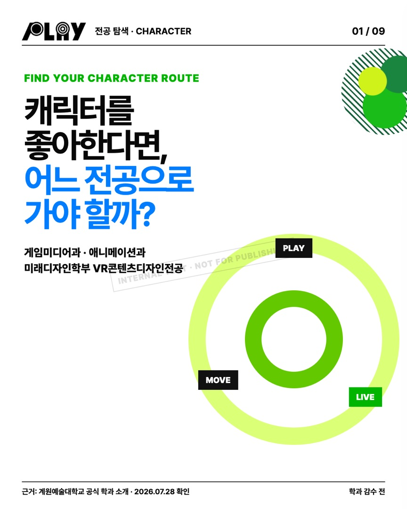
character_major_01_green 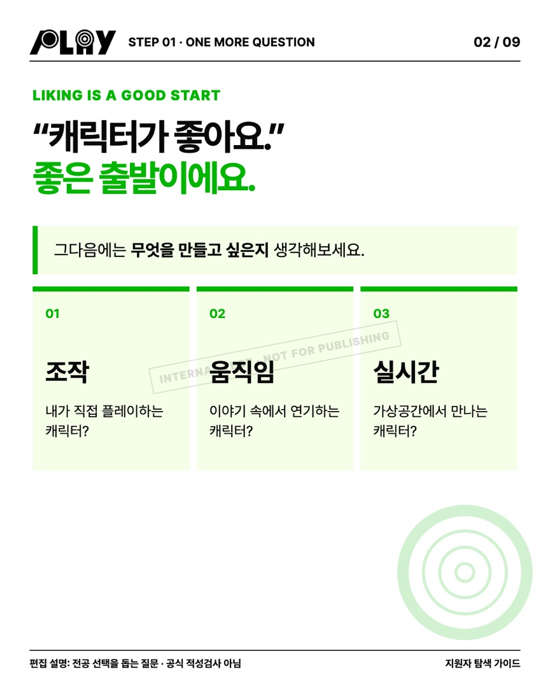
character_major_02_green 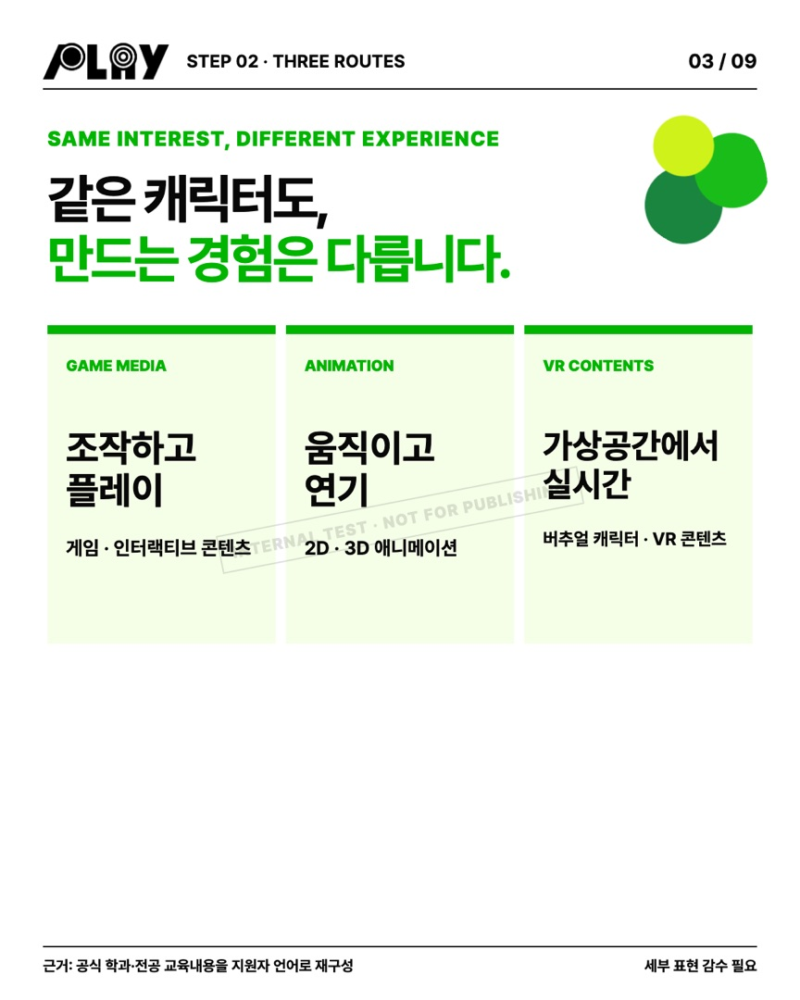
character_major_03_green 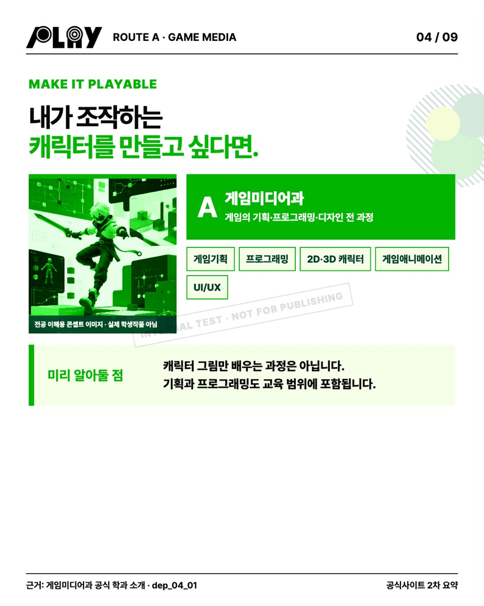
character_major_04_green 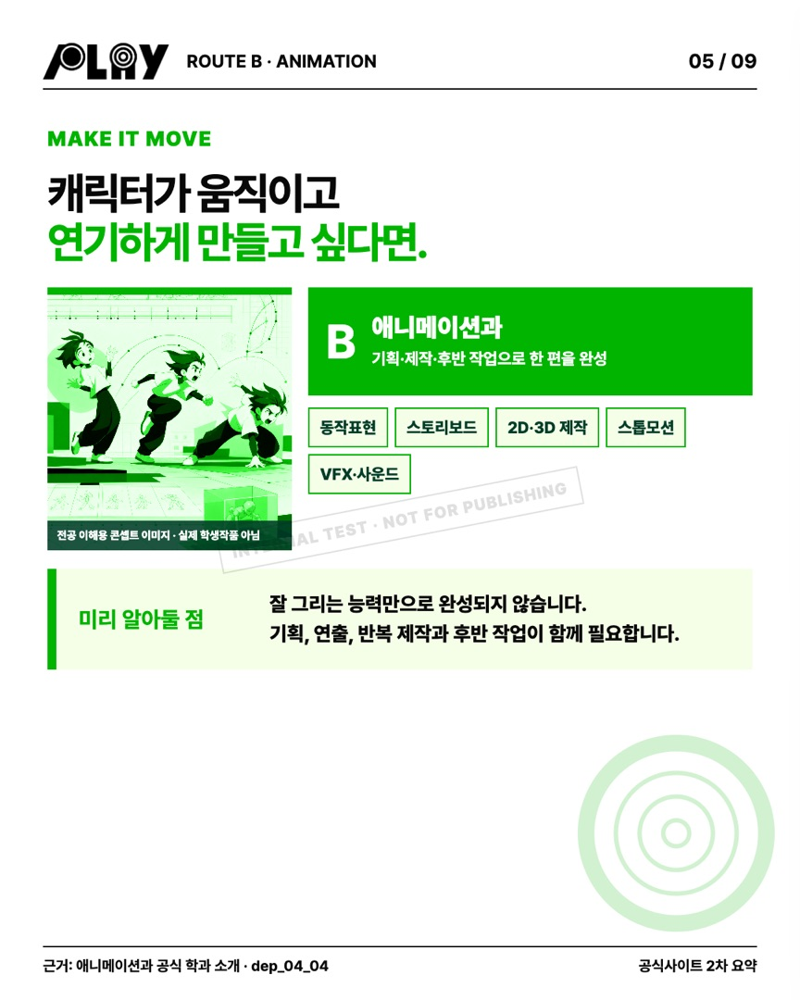
character_major_05_green 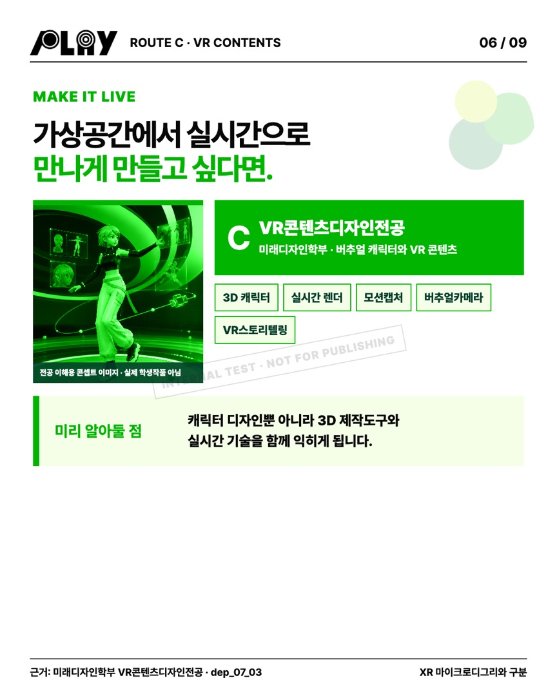
character_major_06_green 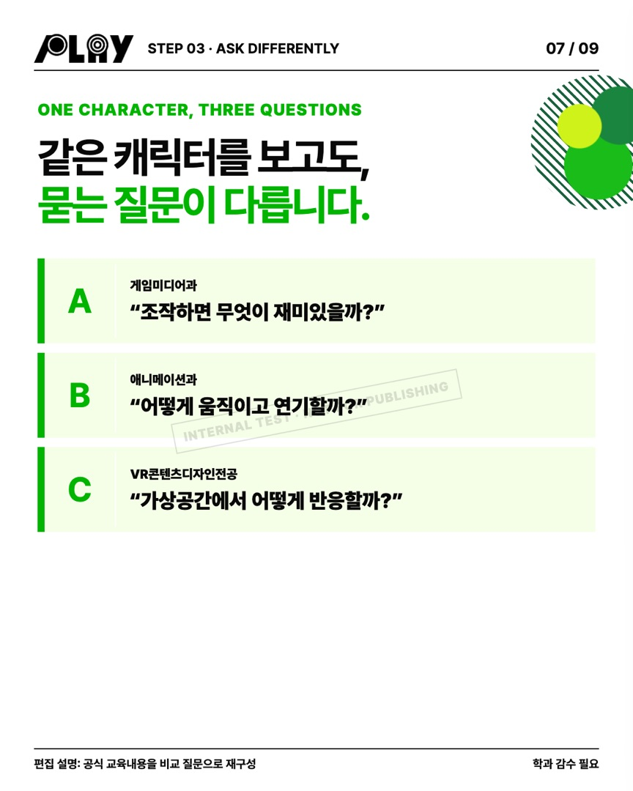
character_major_07_green 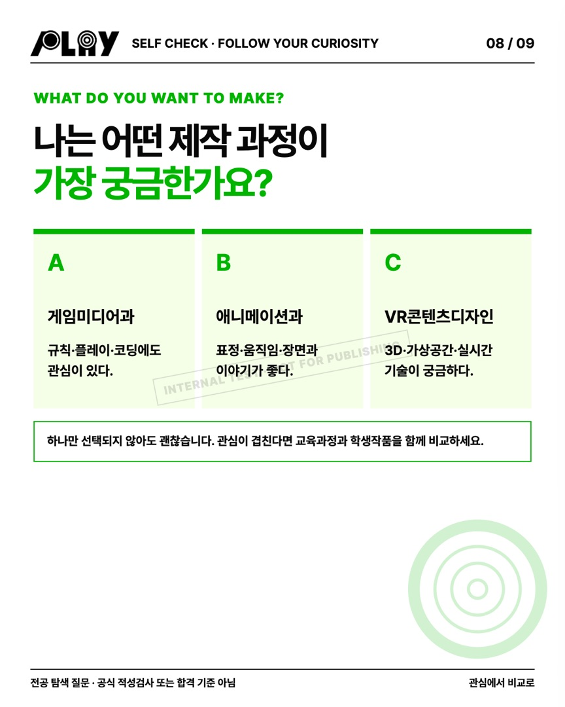
character_major_08_green 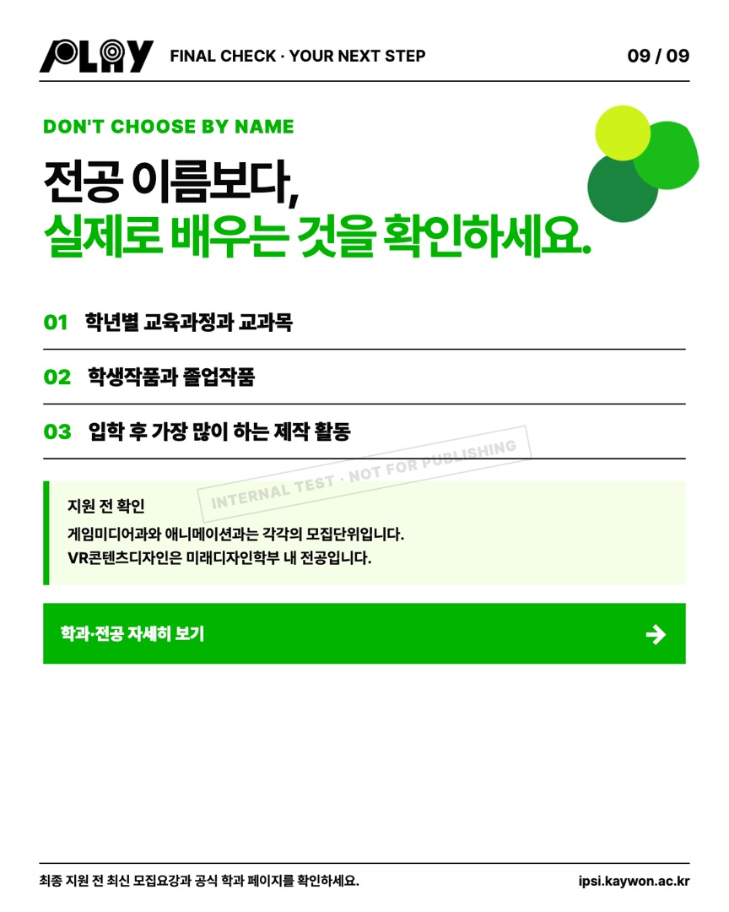
character_major_09_green
전체 보드
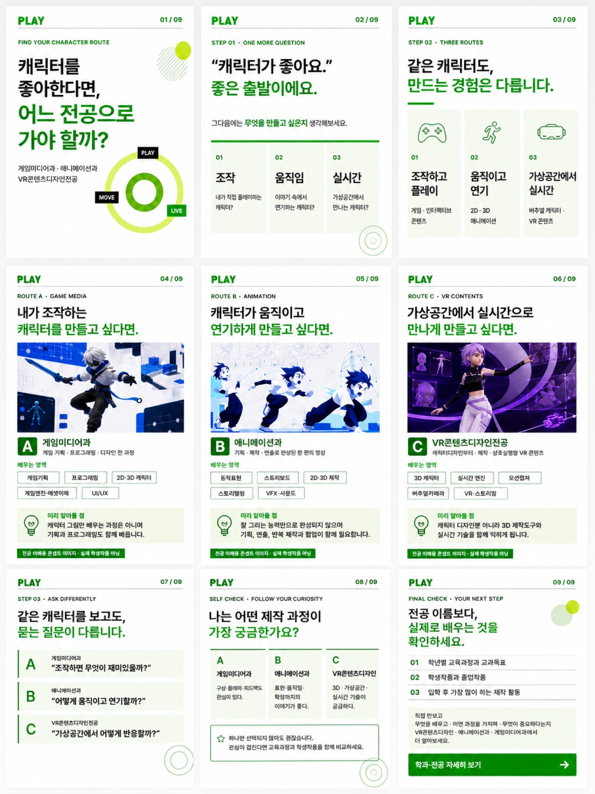
character_major_green_image2_balanced_4x5 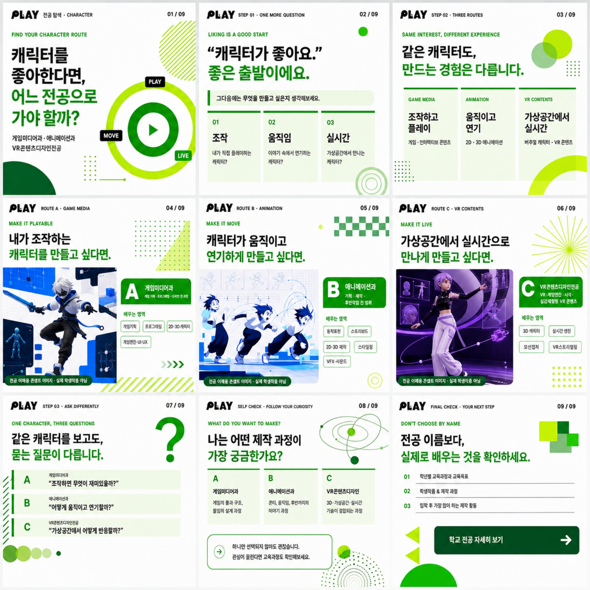
character_major_green_image2_playful 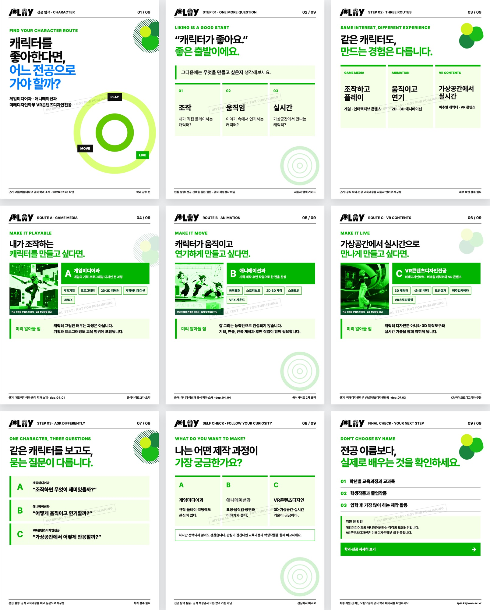
character_major_green 내부 제작 시안 · 외부 게시 승인 전 — 이 페이지의 캐러셀은 학과·입학지원팀 감수를 받지 않은 제작 시안이다. 등장하는 인물·수업·작품 장면은 생성형 콘셉트 이미지이며 실제 계원예술대학교 학생·수업·작품이 아니다. 사실 문장은 2027학년도 공식 모집요강에서 직접 확인한 범위(5·18·42·57·80쪽)를 넘지 않는다.